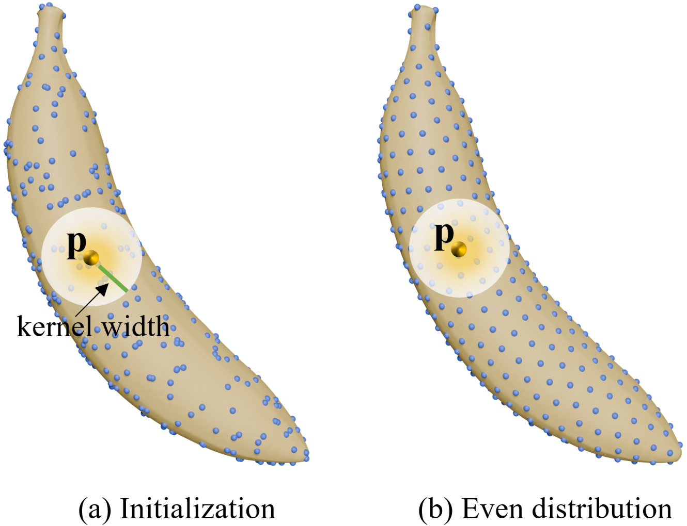
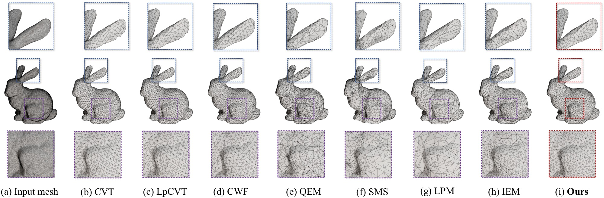
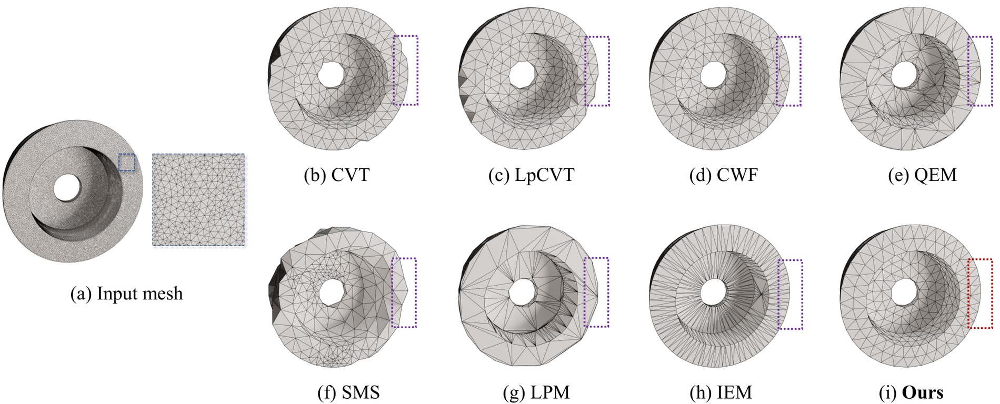
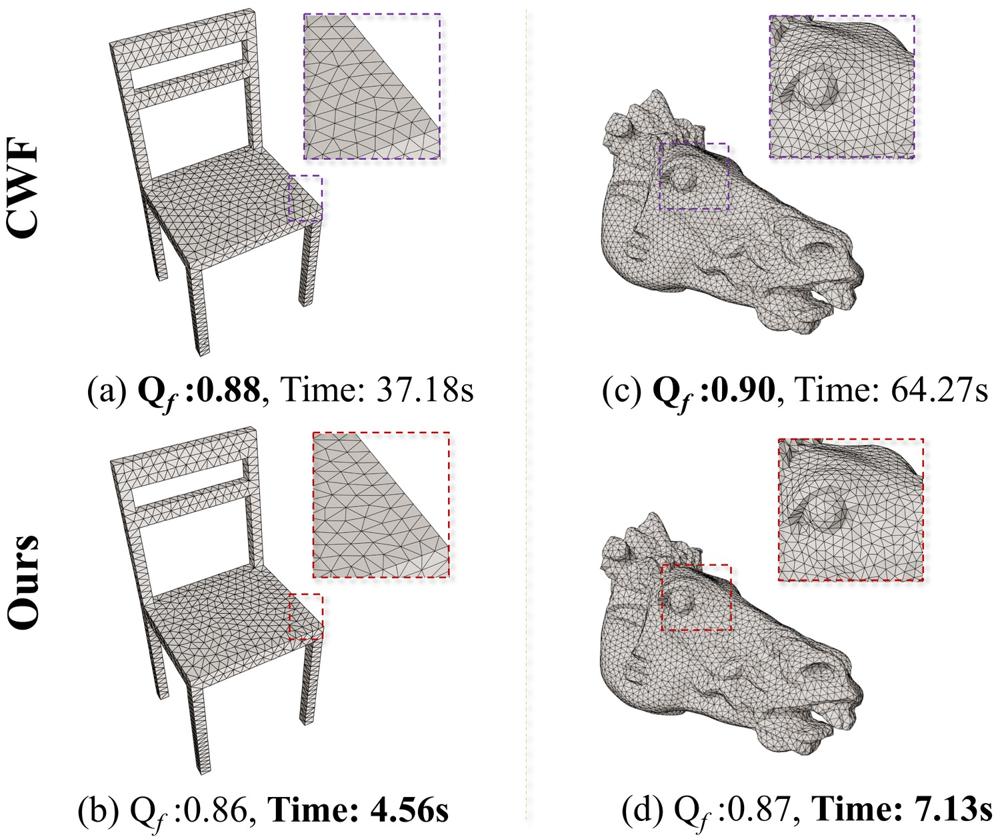

An efficient quality-aware algorithm for feature-preserving triangle mesh simplification
A unified optimization framework for CAD mesh lightweighting.
A particle-interaction energy coupled with a normal-direction anisotropy term.
-
Seven authors, two labs
Wenlong Meng1, Xin Lin1, Rui Gao1, Zhiying Tu1, Dianhui Chu1, Shiqing Xin2, Changhe Tu2
-

1Harbin Institute of Technology
Five of the seven authors
-

2Shandong University
Two of the seven authors
Abstract
One objective · three goalsMesh lightweighting facilitates applications such as digital twins and real-time transmission by substantially reducing representation complexity while maintaining fidelity. Balancing computational cost against lightweighting quality — in terms of triangulation and feature preservation — remains difficult, since many previous approaches prioritise a single criterion rather than excelling on both.
This paper presents a unified optimization framework for efficient mesh lightweighting, particularly for CAD models, by jointly enforcing multiple constraints through a coupled formulation that combines particle-interaction energy with a normal-direction anisotropy term. It targets (1) uniformly distributing surface-constrained movable points to maintain high triangle quality, with a simpler and more efficient implementation than the Centroidal Voronoi Tessellation, and (2) preserving salient features in the spirit of Quadric Error Metrics within a continuous formulation.
Owing to the smooth functional design the method exhibits superlinear convergence. Comprehensive evaluations verify that it surpasses existing lightweighting approaches with respect to mesh quality, computational cost and feature consistency.
- A coupled energy. Particle interaction and normal-direction anisotropy live in one smooth functional, so point density and feature preservation are optimised together instead of in sequence.
- A simpler objective than CVT. The same regularity as a centroidal Voronoi tessellation, without building Voronoi cells at every step — 43 iterations to the stop criterion on 1,000 points.
- Eight times the throughput. 4.56 s against 37.18 s on the chair at Qf 0.86 versus 0.88, with the bevels and bore edges intact.
Method
Particle system · anisotropic normal termSurface-constrained movable points are relaxed under a coupled energy: a particle-interaction term spreads them evenly over the surface, while a normal-direction anisotropy term pulls them onto creases and boundaries. Both goals are expressed in one smooth functional, so the whole thing is solved by plain gradient descent with a superlinear rate.
The result is a distribution that is as regular as a CVT but stays anchored to the features that matter for CAD — and it costs a fraction of the iterations.
Three steps
- 01 Place. Scatter seeds over the surface. No Poisson-disc prepass, no collapse priority queue — the positions are the only state.
- 02 Relax. One energy runs gradient descent: the interaction term equalises spacing, the anisotropy term pulls points onto creases and boundaries. Fig. 01 shows a single kernel width doing both.
- 03 Triangulate. The relaxed set is triangulated once, at the target budget. The 1,000-point run above stops at 43 iterations in 9.08 s.
vs CVTVoronoi cells are rebuilt every iteration. Here the same regularity comes out of one smooth energy, so there is no per-step cell construction to pay for.
vs QEMA collapse order has to be kept valid around every feature edge. Here features are a term in the objective, so that order never has to exist.

Results
Same input · same target vertex count

On the CAD input the target socket keeps its crease and its bore stays round under the same vertex budget, while QEM collapses the rim and CVT rounds the corners off. Feature alignment and triangle quality are the two axes where the difference shows.

A lightweighting pass is usually one step inside a CAD pipeline, run again every time the model changes. At eight times the speed it stops being a batch job you schedule and becomes something you can run while you are still editing.
The panel on the left is the whole argument: the same vertex budget, the same quality band, one eighth of the clock. Nothing else on this page changes the verdict as fast.
Citation
BibTeX@misc{meng2026litemesh,
title = {LiteMesh: An Efficient Quality-Aware Algorithm for
Feature-Preserving Triangle Mesh Simplification},
author = {Meng, Wenlong and Lin, Xin and Gao, Rui and Tu, Zhiying and
Chu, Dianhui and Xin, Shiqing and Tu, Changhe},
year = {2026},
note = {Manuscript under review}
}